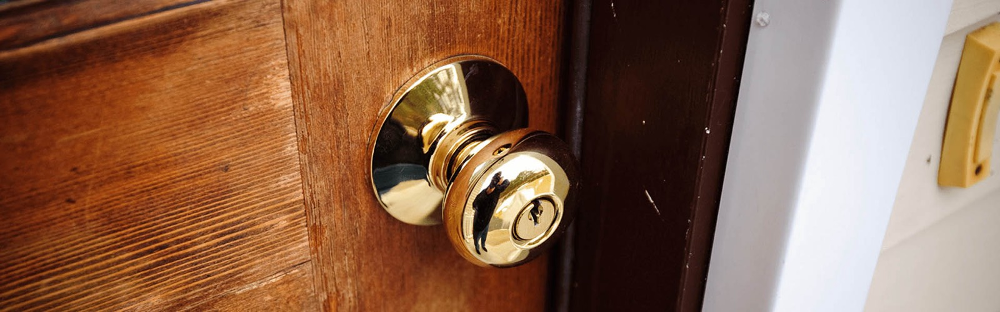

Home locks, lockouts and re‑keying.
Residential locksmith service across Phoenix, available 24 hours a day, 7 days a week for lock repair, installation and lockouts. Most people don’t plan to get locked out, so the goal is simple: make fixing a lockout, a broken lock or a re-key as stress-free as possible, at a competitive price.
- 24-hour emergency lockouts
- Re-keying
- Lock repair and replacement
- Deadbolt installation
- Master keying and access control
- Electronic door locks and keyless entry remotes
